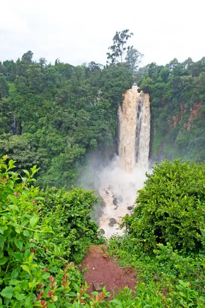
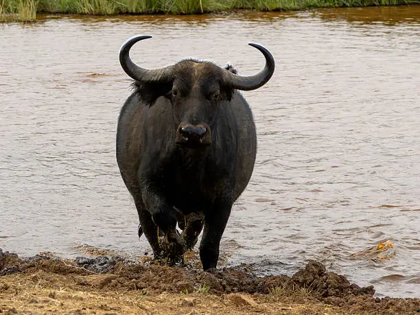

Photo Gallery




Discover misty forests, spectacular waterfalls, mountain landscapes, and unique wildlife in Kenya's highland wilderness.
Aberdare National Park is one of Kenya’s most distinctive safari destinations, located within the central highlands of the Aberdare Range. Unlike the open savannah parks, Aberdare is characterized by dense forests, bamboo groves, moorlands, and dramatic mountain scenery.
The park is home to elephants, buffaloes, leopards, hyenas, giant forest hogs, bushbucks, and the rare bongo antelope. Its cool climate and lush vegetation create a completely different safari experience from Kenya’s traditional wildlife parks.
Visitors are also drawn to the park’s magnificent waterfalls, including Karuru Falls, one of the tallest waterfalls in Kenya, as well as scenic viewpoints and rich birdlife.
Visit one of Kenya's tallest and most spectacular waterfalls.
Explore lush forests, bamboo zones, and scenic moorlands.
Look out for the elusive bongo antelope and forest wildlife.


Experience Kenya's stunning mountain wilderness with Eagle Pam Expeditions.
Plan Your Safari